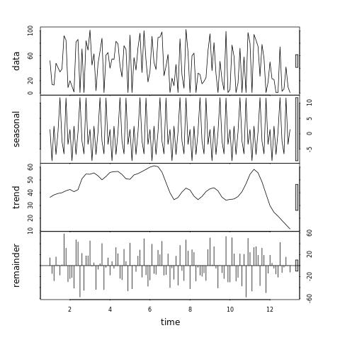

Time Series decomposition for metric:
netdata:jmSRafpAkY:Gi2E9NYbxy:J9emWzWSbq_apps_cpu_system_cpu_time___average
{chart='apps.cpu_system',dimension='containers',family='cpu',instance='[fc97:3759:ced:3b1a:209e:36d9:515a:22e2]:19999',job='netdata'}
